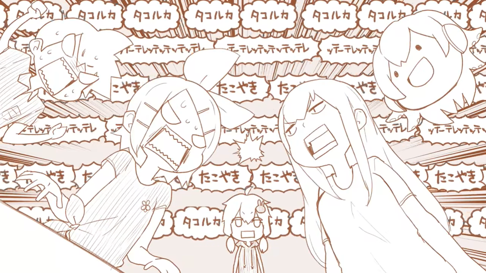
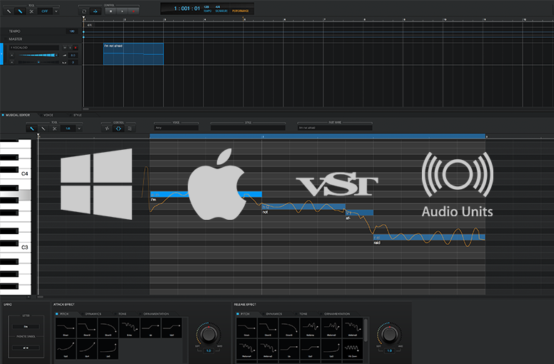

Dentro de las inusuales cosas que me e encontrado, una de ellos es este video el cual combina una bonita animacion y orquesta, solo digo eso por que
de ahi la info esta en Nintendo, asi que no entiendo nada, Pero el video es bonito
Opinion de la animacion
Casi no parece una animacion en si sino como si fuera una recopilacion de dibujos simples, pero a la vez complejos, y eso es lo que me gusta y me llama la atencion.
En la mayoria de partes se mantiene simple pero recalca los detalles necesarios en su momento.
Opinion De la musica
Siempre men han gustado las canciones con un nivel de calma en ellas, pero al mismo tiempo que tengan un ritmo medio elevado, (Complicado la verdad) y en este tipo de musica y logrado encontrar dicha combinacion.
Para ser sincero solamente e podido encontrar un gusto autentico en canciones donde involucren el Software Vocaloid o Voiceroid, Sofware capaces de replicar una voz capaz de cantar, asi es, basicamente voz artificial,
no me gusta escuchar a verdadera gente cantando.

Acerca de VOCALOID y VOICEROID
Vocaloid es un programa de computadora de síntesis de voz, capaz de cantar, desarrollado por Yamaha Corporation, dispone de voces para varios idiomas. Voiceroid es una aplicación de sintetizador de voz desarrollada por AH-Software y está diseñada para voz. Solo está disponible en japonés. Su nombre proviene del software de canto Vocaloid.
